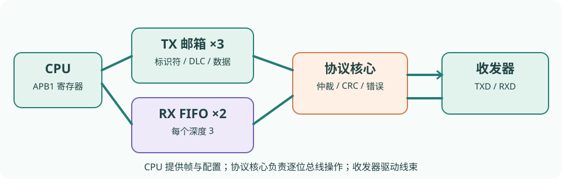
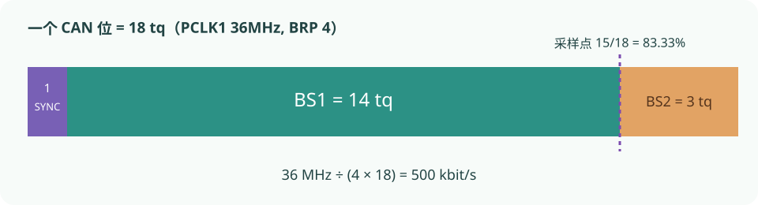

STM32 bxCAN：从时钟树走到 TXD/RXD
以 STM32F103 为例，连接协议控制器、PCLK1 位时间、复用引脚与真实总线。
CPU 发出一个 ID，谁负责剩下的事情？
bxCAN 是部分 STM32 型号内集成的经典 CAN 2.0 控制器。软件写入发送邮箱后，硬件负责串行化、仲裁、位填充、CRC 和错误状态维护；接收路径经硬件过滤器进入 FIFO。它仍需要第 7 章的外置物理层收发器。

型号边界：本章代码特指 STM32F103 常规型号 + STM32F10x 标准外设库（SPL）。STM32F105/F107 连接型产品可提供双 CAN、共享 28 个过滤器组；普通 STM32F103 常见为 14 组。其它 STM32 系列可能采用 FDCAN，不能套用 bxCAN 寄存器和 API。
为什么同一份位时序配置，换块板就失效？
在 STM32F103 上，CAN1 位时间来自 APB1 的 PCLK1，而不是直接来自 CPU 主频。只有 PCLK1、预分频 BRP、BS1 和 BS2 全部确定，波特率才有确定值；SJW 影响允许的重同步跳转，不加入位时间总量。

交互计算：改动 PCLK1 或位段会怎样？
500.000 kbit/s · 18 tq/bit · 采样点 83.33%
基于整数 tq 模型；还需要满足节点时钟误差、收发器传播延迟和网络拓扑裕量。
示波器上看不到 TXD：先确认 GPIO 是哪个引脚
STM32F103 的 CAN1 默认常见映射为 PA11/RX、PA12/TX。若板子接在 PB8/RX、PB9/TX，需要同时使能 AFIO 时钟并配置 CAN1 重映射。F1 的 GPIO 初始化方式不等同于 F4 的 Alternate Function 寄存器配置。
// STM32F103 + SPL；示例使用默认 PA11/PA12 映射
RCC_APB2PeriphClockCmd(RCC_APB2Periph_GPIOA, ENABLE);
RCC_APB1PeriphClockCmd(RCC_APB1Periph_CAN1, ENABLE);
GPIO_InitTypeDef io;
GPIO_StructInit(&io);
io.GPIO_Pin = GPIO_Pin_12; // CAN1_TX
io.GPIO_Mode = GPIO_Mode_AF_PP;
io.GPIO_Speed = GPIO_Speed_50MHz;
GPIO_Init(GPIOA, &io);
io.GPIO_Pin = GPIO_Pin_11; // CAN1_RX
io.GPIO_Mode = GPIO_Mode_IPU;
GPIO_Init(GPIOA, &io);
// 若改用 PB8/PB9：另启 GPIOB、AFIO 时钟及 GPIO_Remap1_CAN1
图纸也必须确认 MCU 的 TXD/RXD 与收发器的 TXD/RXD 对应、共地和收发器使能脚状态。仅在 MCU TX 引脚看到数字波形，并不等于总线上真的发出了合法 CAN 帧。
从上电到可通信：哪些步骤属于驱动，哪些属于网络？
- 确认芯片确有 bxCAN，核对原理图、APB1 实际频率、引脚复用和外部收发器状态。
- 使能 GPIO/CAN 时钟，初始化对应复用引脚。
CAN_DeInit后用CAN_StructInit设置完整参数，再调用 SPLCAN_Init；检查返回值。- 至少启用一个接收过滤器；按需配置 NVIC 和 CAN 中断源。
- 先在环回模式确认本地发送接收，再上接好终端的实物总线做 ACK 与错误计数检查。
SPL 的
CAN_Init() 已包含退出初始化模式的过程，没有 CAN_Cmd() 或 HAL 风格的 HAL_CAN_Start() 这一步。混用 SPL、HAL、不同芯片例程是常见错误来源。进一步查证
ST RM0008：bxCAN、位时序及过滤器；ST STM32F1 HAL 驱动（与本章 SPL 代码不同）。调用 API 前请核对工程使用的库版本和芯片头文件。